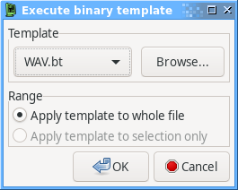

Binary Templates
Binary Templates allow you process and annotate data using a C-like language based on 010 Editor's Binary Templates.
To execute a binary template, use the Execute binary template / script command under the Tools menu to open the following dialog:

The dropdown allows choosing from templates in the Plugins/binary-template/templates/ directory, or the Browse... button allows choosing templates from elsewhere on the filesystem.
If you have a contiguous range of bytes selected in the main file view, then the Apply template to selection only will execute the template scoped to that range of the file.